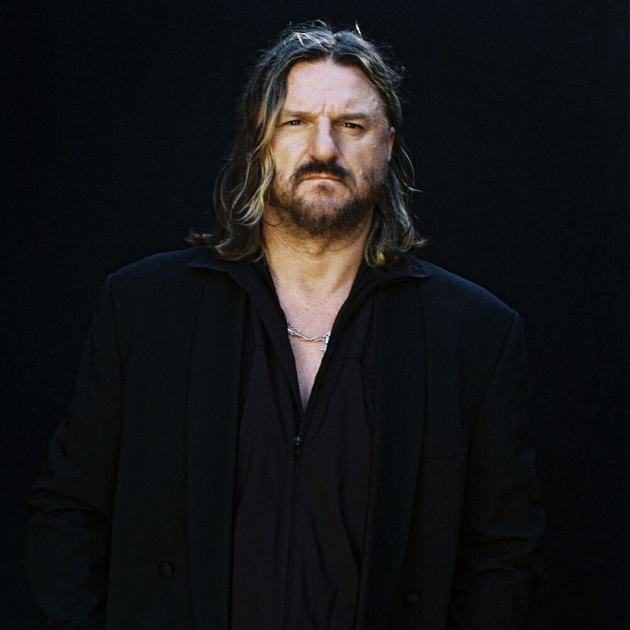

Solomun rising: Diynamic Music’s triumphant year


2012 really was the year for Diynamic boss Solomun. The deep house vanguard reached new heights of success, threatening to tip the scales into genuine crossover, a la Luciano levels of Ibiza super-stardom. Solomun in particular ruled the White Isle last season, showcasing his Diynamic Music label at the smash-hit Diynamic Neon Nights residency at Sankeys. This year, though, he has everything in place to step it up a notch.
The Diynamic Records cast will return to Sankeys on Tuesdays from 10 July, but this year the boss is also fronting a high-profile residency at Pacha, making him the face of the long-running club’s much-discussed shift in music policy. In addition, Solomun steered his record label into the festival market for the first time in May with the Diynamic Festival in Amsterdam. In late June, he followed it up with an open-air in Berlin, in partnership with Club Watergate.
Talking to inthemix in Ibiza, Solomun elaborated on why Amsterdam had been chosen as the location for their first festival, revealing there’s more on the way soon. “Our experience in Amsterdam over the past years have always been very good. We know we have a very good standing there, and it’s also a good place in Europe, people can travel around to come and visit the city,” he said. “Also our partners, we have been working together with them for around five years. So a lot of things come together to say, yeah, it’s the right place.”
In addition to their Berlin open-air in late June, Diynamic Music is working on launching a festival in Brazil, with a tentative launch date of February 2014. With the label set to enjoy its biggest year yet, Solomun insists the musical direction remains the same.
“The thing is, you do what you do,” he told inthemix, referring to his own profile as well as his label. “In the end, we haven’t really changed anything. Though the label is always growing, and you sometimes go in new directions, it’s something we’ve always felt positive about.”
He attributes the growing interest in his label’s style as a general shift towards deeper house and techno in dance music. “A lot of DJs have stripped their music a little bit down, and a lot of artists have gone in this direction. And of course, [there was] Ibiza last year. I won the award for Best Producer award, and for them that is a ‘sign’. I am now the face in Ibiza for this movement. But it could have easily been Jamie Jones or someone else.”
Diynamic Music’s banner year
Born in Bosnia, and raised in Germany, Solomun was ten years old when he was first exposed to dance music. His older cousin visited his family, and brought with him a cassette recording of a live club set. “From this time onwards, I was always open-minded and interested in music.”
Solomun was spending all of his money on vinyl by the time he reached his teens, and he scored his first gig at the age of 16 at an all-ages ‘Discotheque’ in Hamburg; which is still his hometown in Germany, as well as that of the Diynamic Music family.
Later he began throwing monthly parties in Hamburg, with an eclectic approach forming the foundation of his DJing, with old-school funk, disco and hip-hop always featuring heavily in his sets, alongside the wide selection of house music he plays.
“Later I also met H.O.S.H., and that was the beginning of the Diynamic Music friendship,” he told inthemix. “For me it’s always important to have a strong connection with people, and when we started the label together this was very important. And then we met Stimming, and at that point he was a big rebel from Frankfurt who only wanted techno. Before anything else, we have become friends. Everything that we have done, it was growing very slowly, but in a healthy way. And we’ve always had a lot of luck with the artists we’ve chosen to work with.”
The whole Diynamic Music family was in Amsterdam for the label’s first festival in May, playing across two stages in an intimate outdoor setting during the spring-time. From one angle, you knew exactly what you were going to get, so the day was short on surprises. For lovers though of Diynamic’s rather distinct brand of warm, deep house and melodic techno though, it was a proposition that was hard to ignore.
Diynamic Music takes Amsterdam
The O2 Arenapark was the venue chosen for the party; an open space in the middle of the city with a few scattered grassy patches laid over the concrete. The setting was perhaps a little short of spectacular, not quite reaching the standard of the other open-air parks we’ve come to associate with Amsterdam’s renowned day events. From a practical perspective, though, the site would have demanded little in terms of infrastructure.
The mainstage was an open area with a canopy stretched over the top, protecting punters from the Northern European spring that never actually arrived this year, while the stage set-up was an impressive collection of stacked, back-lit cubes, recreating the familiar Diynamic artwork that adorned the festival’s advertising. H.O.S.H. was laying down a tantalizingly deep selection of tech-house upon arrival in the late afternoon, with all the warmth you’d expected from the label’s output, though with a tougher drive that was reflective of the fact he was playing to a crowd of several thousand. From this vantage point, he was already delivering on the festival’s promise of beautiful, warm, melodic house music all day long.
- Next
- 2